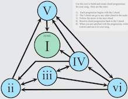

Enter Music::Chord::Progression
 This weekend I saw this diagram and thought, "I can do that!"
tl;dr: Music::Chord::Progression
For me, programming is an iterative process. First I get a glimmer of an idea. Then I work out both in my head and in perl a "Minimal working example". This usually reveals the rudimentary data stuctures and algorithms necessary, and allows whatever it is that I am curious about to be seen in action.
If still curious, I'll next craft a more fully featured program using these ideas but made generic with various parameters (like musical scale parts). Fiddle about, rinse, repeat... And sometimes, if the program has enough parametric variation and could be "generically usefull", I will decide it can be made into a module!
This is exciting to me because I love building APIs for some reason.
Ok. On with the show!
The above module has a lot of attributes that control the execution of the single method called generate. I will let the reader check those out. The documentation explaines each.
The meat of the code is this generate method, which according to the documentation generates "a fresh chord progression." Let's dive in!
The first thing is to assign our object variable:
my ($self) = @_;
We bail out if the chord transition network (net) doesn't match-up with the chord_map attribute that we have defined:
croak 'chord_map length must equal number of net keys'
unless @{ $self->chord_map } == keys %{ $self->net };
The first part of the algorithm is to create a random progression:
my @progression;
my $v; # Vertex
for my $n (1 .. $self->max) {
$v = $self->_next_successor($n, $v);
push @progression, $v;
}
This uses the graph attribute object (as well as the tonic and resolve attributes) to determine the next numbered key of the net.
Next, it is time to perform jazz chord substitution (if requested in the constructor):
my @chord_map = @{ $self->chord_map };
if ($self->substitute) {
my $i = 0;
for my $chord (@chord_map) {
my $substitute = $self->sub_cond->() ? $self->substitution($chord) : $chord;
if ($substitute eq $chord && $i < @progression && $self->sub_cond->()) {
$progression[$i] .= 't'; # Indicate that we should tritone substitute
}
$chord = $substitute;
$i++;
}
}
my @phrase = map { $self->_tt_sub(\@chord_map, $_) } @progression;
This bit is a bit complicated. Basically it transforms the object chord_map into dominants or extended chords. Also it determines if a scale note in the progression should be substituted with its tritone.
We're almost done, but we need to attach octaves to actual notes in order to render them to audio:
my $mcn = Music::Chord::Note->new;
my @notes;
for my $chord (@phrase) {
my @chord = $mcn->chord_with_octave($chord, $self->octave);
push @notes, \@chord;
}
Here, the handy Music::Chord::Note module is used to translate our phrase of chords to playable notes.
We may have requested that the sharp notes be made flat. In that case we perform these gymnastics:
if ($self->flat) {
my %equiv = (
'C#' => 'Db',
'D#' => 'Eb',
'E#' => 'F',
'F#' => 'Gb',
'G#' => 'Ab',
'A#' => 'Bb',
'B#' => 'C',
);
for my $chord (@chords) {
for my $note (@$chord) {
$note =~ s/^([A-G]#)(\d+)$/$equiv{$1}$2/ if $note =~ /#/;
}
}
}
This uses a reqular expression substitution to change sharped notes to their flat equivalents.
Lastly, we return the transformed chords:
return \@chords;
Ok great. So what kind of things does this produce? Here is the basic output when modulated over E D A D in major (made by the program moduation):
And here is one with a chord progression, bass and a single note top line (made by the program progressive):
Sounds almost human, but is entirely auto-generated.